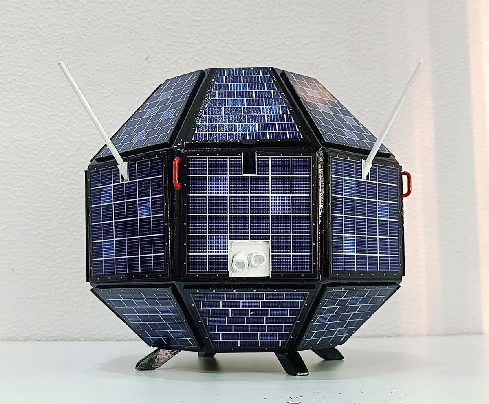

On April 19, 1975, India became a spacefaring nation. Named after the 5th-century mathematician who calculated the value of pi and the length of the solar year — India's first satellite carried a name that told the world exactly who we are.
Watch: Aryabhata — India's First SatelliteAryabhata — named after the legendary 5th-century Indian mathematician and astronomer — was India's first satellite and the beginning of everything. Launched on April 19, 1975, from the Soviet Kapustin Yar launch site aboard a Soviet Cosmos-3M rocket, it marked the moment India crossed the threshold from an Earth-bound nation to a spacefaring one.
The satellite was built entirely by ISRO — the first entirely Indian-designed and built spacecraft. The Soviet Union provided the launch. India provided the engineering. The collaboration was purely transactional: India needed a ride to orbit, and the USSR provided one.
Aryabhata's primary purpose was to demonstrate India's capability to build a functional satellite — to prove that an Indian institution could conceive, design, fabricate, test, and operate a spacecraft. On all counts, it succeeded. A power supply failure five days after launch curtailed the science mission, but the satellite itself orbited successfully for years.
Aryabhata was a 26-sided polygon — a shape chosen because it approximated a sphere while being easier to manufacture with flat solar panels on each face. All 26 faces were covered with solar cells to generate power regardless of the satellite's orientation relative to the Sun.
The spacecraft carried three science payloads: X-ray Astronomy, Aeronomy (upper atmosphere studies), and Solar Physics. All three were developed by ISRO scientists — the first generation of Indian space engineers working on instruments with no precedent in India.
Five days after launch, a power supply failure disabled all science instruments. The satellite itself continued to orbit — its beacon transmitting — for 17 years, finally re-entering Earth's atmosphere on February 11, 1992.